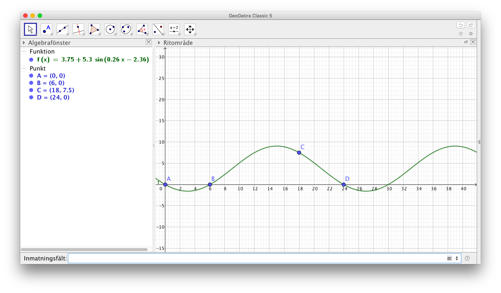
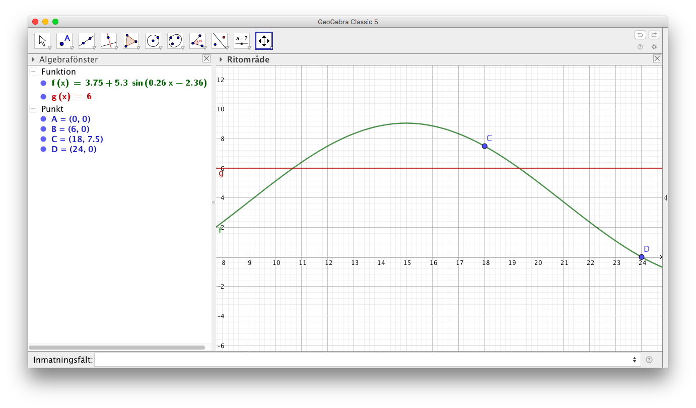
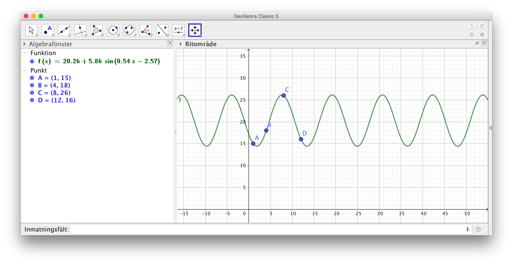
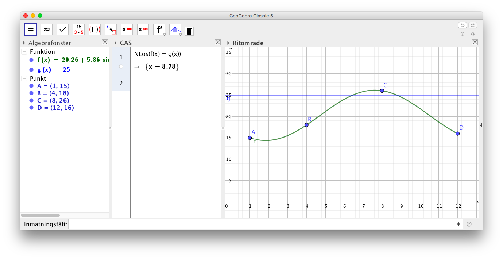
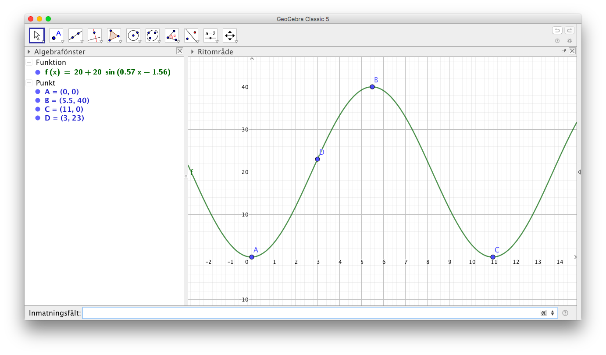

14. Periodiska fenomen
Video där en tyngd hänger i en fjäder och vi plottar läget som funktion av tiden.
Som det sista för kursen skall vi se på periodiska fenomen, fenomen som upprepar sig själv. Periodiska fenomen kan man modellera med hjälp av trigonometriska funktioner, speciellt sinus och cosinus.
Exempel 1 Saltströmmen i Norge beror på tidsvattnet. Strömmen upprepar sig var 6 timme. Höjdskillnaden mellan ebb och flod är 1 m. Bestäm funktionen som ger höjden för vattnet.
Exempel 2 Bestäm amplituden och största och minsta värde för följande funktioner.
Exempel 3 På bilden ser du solens läge varje timme från Concordia, Antarktis.
- Bilda en funktion som beskriver solens rörelse.
- När är förändringen i solens bana som störst?

Uppgifter
- Bestäm amplituden och största och minsta värde för följande funktioner.
- \( 4 \sin 6x \)
Sinus rör sig mellan -1 och 1.
\( 4\sin \) rör sig mellan -4 och 4.
Amplituden är 4. Största värdet är 4 och minsta värdet är -4.
- \( 4 \sin 6x + 2 \)
Sinus rör sig mellan -1 och 1.
\( 4\sin \) rör sig mellan -4 och 4.
Sedan adderar vi till 2.
Amplituden är 4. Största värdet är 6 och minsta värdet är -2.
- \( 4 \sin (6x + 2) \)
Sinus rör sig mellan -1 och 1.
\( 4\sin \) rör sig mellan -4 och 4.
Observera parentesen!
Amplituden är 4. Största värdet är 4 och minsta värdet är -4.
- \( 3 \sin 4x - 2 \)
Sinus rör sig mellan -1 och 1.
\( 3\sin \) rör sig mellan -3 och 3.
Sedan subtraherar vi 2.
Amplituden är 3. Största värdet är 1 och minsta värdet är -5.
- \( 4 \sin 6x \)
- Bestäm amplituden och största och minsta värde för följande funktioner.
- \( \cos(\dfrac{x}{2}-1) \)
Cosinus rör sig mellan -1 och 1.
Amplituden är 1. Största värdet är 1 och minsta värdet är -1.
- \( -\cos\dfrac{x}{2}+1 \)
Cosinus rör sig mellan -1 och 1.
\( -\cos \) rör sig mellan -1 och 1.
Sedan adderar vi 1.
Amplituden är 1. Största värdet är 2 och minsta värdet är 0.
- \( \pi\sin(\dfrac{3x}{4}+\pi) \)
Sinus rör sig mellan -1 och 1.
\( \pi\sin \) rör sig mellan \( -\pi \) och \( \pi \).
Amplituden är \( \pi \). Största värdet är \( \pi \) och minsta värdet är \( -\pi \).
- \( \sin^2(\dfrac{x}{4}+\pi) \)
Sinus rör sig mellan -1 och 1.
\( \sin^2 \) rör sig mellan 0 och 1.
Amplituden är \( \dfrac{1}{2} \). Största värdet är 1 och minsta värdet är 0.
- \( \cos(\dfrac{x}{2}-1) \)
Mont-Saint-Michel, i norra Frankrike, är ett gammalt kloster som är belägt på en ö i Engelska kanalen. Då det är Lågvatten, ebb, kan man gå till ön medan då det är högvatten, flod, måste man ta båt över.
Under en vecka i mars är vattennivån för ebb (lågvatten) ca 2,1 m och för flod (högvatten) ca 11,5 m. Dygnets första ebb är kl 3 och ebb och flod varierar med 6 timmars mellanrum.
- Bestäm den funktion som beskriver vattennivån.
Något i stil med

- Vad är vattennivån 3 timmar efter ebb?
\( f(6) \) i funktionen ger 6,8 m.
- När är förändringen av vattennivån som störst? Hur stor är den då?
Kommandot \( \text{nLös}(f''(x)=0) \) ger x=0 och x=6. Klockan 0 och 6 är förändringen störst. Förendringen får vi genom att sätta in 0 och 6 i derivatafunktionen, \( f'(0)= -2,46 \) och \( f'(6)=2,46 \). Enheten är meter/timme.
Exakta värden för ebb och flod hittar du på Windsurfer.com
- Bestäm den funktion som beskriver vattennivån.
- Temperaturen en vårdag i Helsingfors anges med funktionen \( f(t)=6,5 -3,5\sin(\frac{\pi\cdot t}{12}) \), där t är timmar räknat från midnatt.
- Ange den högsta och lägsta temperaturen under dygnet.
Vi kan lösa den på två sätt:
- Eftersom sinus får värden mellan -1 och 1 rör sig värdena mellan \( 6,5-3,5(-1) = 10 \) och \( 6,5-3,5\cdot 1 = 3 \).
- Vi deriverar funktionen och söker största och minsta värden.
- Hur snabbt stiger eller sjunker temperaturen kl 20.00?
Vi söker derivatans värde i punkten 20. Räknaren ger -0,46 o/h.
- När är temperaturförändringen möjligast stor?
Vi söker förändringen för derivatan, andra derivatans nollställen. Räknaren ger 0, 12 och 24. Värdena är \( f'(0)=f'(24)=-0,92; f'(12)=0,92 \).
- Ange den högsta och lägsta temperaturen under dygnet.
- I tabellen ser du dygnstemperaturen för en stad i mars.
Klockslag Temperatur (oC) 0.00 0 6.00 0 18.00 7,5 - Vi antar att temperaturförändringen är periodisk och att den kan framställas som en sinusfunktion. Använd dig av GeoGebra och kurvanpassa datan med en sinusfunktion.
Mata in punkterna och använd dig av FitSin()-kommandot.
Vi får följande:

- Använd modellen och bestäm temperaturen klockan 10.00
Alltså \( f(10) = 5,1^{\circ}C\).
- Vid vilka klockslag är det som kallast och varmast och vad är temperaturen då?
Sök derivatans nollställen.
Derivatans nollställen är 3 och 15. Temperaturen är då \( f(3) = -1,6^{\circ}C \) och \( f(15)=9,1^{\circ}C \).
- Bestäm grafiskt de klockslag då dygnets temperatur är över 6oC.
CAS behöver inte ge något vettigt. Här utnyttjas funktionen \( g(x)=6 \).

Mellan 10.30 eller 10.45 och 19.20 eller 19.30. Beror lite på hur noggrannt man studerar grafen.
- När är temperaturförändringen som störst och hur stor är förändringen då?
Vi söker andra derivatans nollställen.
Klockan 9 och 21. Temperaturförändringen är då \( 1,4 \dfrac{^{\circ}\text{C}}{\text{h}} \) och \( -1,4 \dfrac{^{\circ}\text{C}}{\text{h}} \).
(Sätt in klockslagen i derivatafunktionen.)
- Vi antar att temperaturförändringen är periodisk och att den kan framställas som en sinusfunktion. Använd dig av GeoGebra och kurvanpassa datan med en sinusfunktion.
- I tabellen ser vi medeltemperaturen för några månader i en stad i Grekland år 2016.
Månad januari april augusti december Temperatur (oC) 15 18 26 16 - Vi antar att temperaturförändringen är periodisk och att den kan framställas som en sinusfunktion. Använd dig av GeoGebra och kurvanpassa statistiken med en sinusfunktion.
Mata in punkterna och använd dig av FitSin()-kommandot.
Vi får följande:

- Använd modellen för att bestämma stadens medelteperatur i juni med en grads noggrannhet.
Juni är 6 månaden. Alltså \( f(6) = 24^{\circ}C\).
- Bestäm grafiskt och med hjälp av CAS de månaders medeltemperatur som överstigher 25oC enligt modellen.
Kom ihåg att \( 1 \leq x \leq 12 \).
CAS behöver inte ge något vettigt. Här utnyttjas funktionen \( g(x)=25 \).

Alltså juli och augisti.
- Vi antar att temperaturförändringen är periodisk och att den kan framställas som en sinusfunktion. Använd dig av GeoGebra och kurvanpassa statistiken med en sinusfunktion.
- Helsinki Skyweel är Finlands största pariserhjul. Dess diameter är ca 40 meter och man stiger på vid hjulets lägsta punkt. Att åka ett varv tar 11 minuter. Efter 3 minuter är man 23 meter ovan hjulets lägsta punkt.
- Bilda en funktion som anger höjden som funktion av färdtiden.
Vi får något i stil med

- När är stighöjden som störst?
Vi söker andra derivatans nollställe.
Vid 2,7 och 8,2 minuter. Efter 5,5 minuter åker vi nedåt, alltså \( f'(2,7) = 11,4 \) m/min.
- Bilda en funktion som anger höjden som funktion av färdtiden.